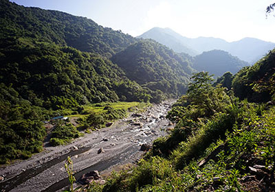
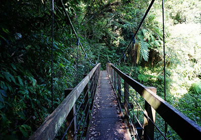

Well I made it 1200 miles already, and I passed through some interesting places on the way:
Well I made it 1200 miles already, and I passed through some interesting places on the way:
看過”不一樣的月光”這部電影….
是在描寫日治時代發生在黑皮部落的故事--泰雅少女落難的事件
被這故事吸引著，於是利用年假我也試圖來到位於宜蘭的莎韻之路_南澳古道。
南澳古道，又稱「比亞毫古道」、「舊武塔古道」。比亞毫、武塔，都是這條古道途中的泰雅族部落名稱。

雖在盛夏的八月，古道的林蔭十分茂密，且南澳南溪就在腳下大約數十公尺之處，和風徐徐，格外涼爽。

古道上綠意盎然，路況良好，只有幾處路段毀壞，較為險峻。
林務局採用生態工法整建，儘量維持原有的古貌，小溪澗鋪設了木板橋， 大溪澗則架設吊橋，
而狹窄的岩壁路則設有繩索以保障遊客安全。沿途設有不少導覽解說， 讓遊客能認識古道的自然環境與人文歷史。
抵達步道的終點，羅東林管處進行的古道整修計畫，目前只到三公里處。
=======Documenting my trip around the US on my very own Segway!
Well I made it 1200 miles already, and I passed through some interesting places on the way:
I saw some Burma Shave style signs on the side of the road today:
Passing cars,I definitely won't be passing any cars.
When you can't see,
May get you,
A glimpse,
Of eternity.
 My first day of the trip! I can't believe I finally got everything packed and ready to go. Because I'm on a Segway, I wasn't able to bring a whole lot with me:
My first day of the trip! I can't believe I finally got everything packed and ready to go. Because I'm on a Segway, I wasn't able to bring a whole lot with me:
A journey of a thousand miles begins with one Segway.>>>>>>> origin/master